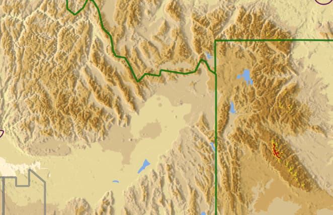

Currently we do all of this on the CPU. Our GPS app screen is about 1500 x 2000 pixels, and filled with Elevation map data (heightmap transferred to a GrayScale 16bit Texture).
What we do on the CPU is a quite expensive calculation of Normals, so that we can do adequate shading, for a Relief map (see image below). This is the MOST EXPENSIVE thing we do currently, and is causing hiccups as you pan the map (up 0.1 sec worst case on Android).
We’d like to push these calculations onto the GPU, via a “Compute Shader”, which seems to not be supported by Urho3D, currently.

I think we might be able to do this without Compute Shaders if we could do one specific operation using regular Shaders:
- Create offscreen scene, with Orthographic Camera.
- In this scene, place a plane that fills the full screen, and is covered by the HeighMap texture (16bpp grayscale).
- Then use RTT to render to a new texture, same size as the HeightMap. Matched 1:1.
- The Vertex Shader outputs varying XY texture position coords (varies per pixel).
- Pixel Shader Samples the Height Map texture surrounding pixels to calculate the local Slope/Normal, and outputs this into the RTT target, 1:1 pixel matching the HeightMap.
- DONE. Now we can use this RTT target Normals Texture as Input to our TerrainShader.
(We already do #(6), with a Normals Texture generated on our CPU.)
Has anyone else tried anything like this? Does this seem like a viable approach? (or am I missing something?)
NOTE: Our Heightmap database is currently 0.5 GB, and the largest DB we have. If we added Normals to this DB, it would double it’s size, which is not a viable option.
Use of a Compute shader technique is the best solution, by far.